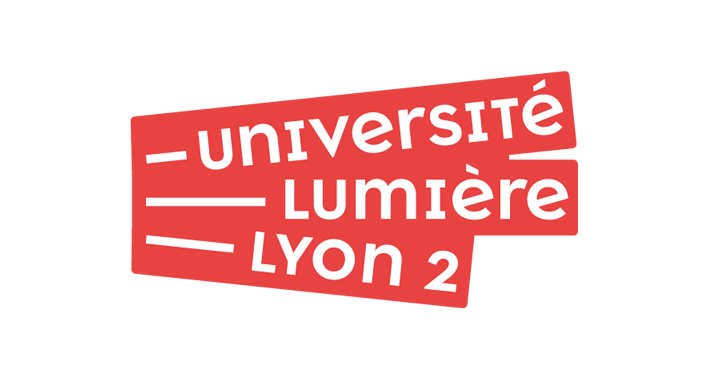
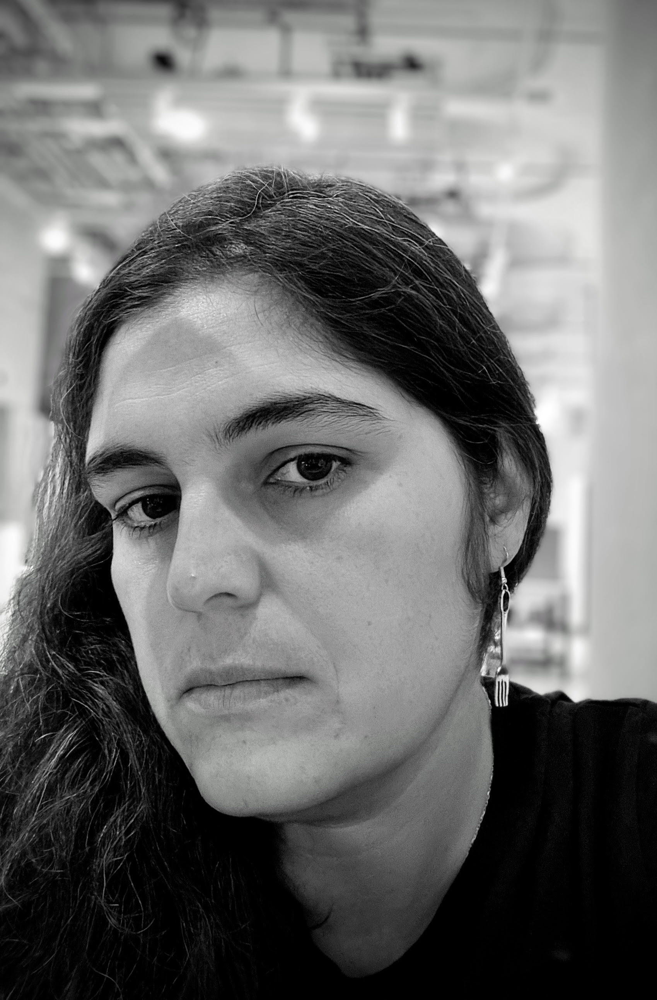

I am a member of ERIC laboratory, Data Mining and Decision (DMD) team.
Address: 5 avenue Pierre Mendès France, 69676 Bron, Cedex, France
Email: pegah.alizadeh@univ-lyon2.fr

My research interests include decision-making, reinforcement learning, and optimization, with a particular focus on robustness and uncertainty quantification and their applications to large language models and networked systems.
I am interested in the alignment and calibration of large language models through pre-training, supervised fine-tuning, and reinforcement learning. I am also interested in studying language models from the perspective of constraints, coordination, and interactions between their different components and agents.
Are you a Master's or Bachelor's student interested in machine learning, natural language processing, or reinforcement learning? We have sometimes research opportunities available.
If you are passionate about advancing AI and would like to work on cutting-edge projects, I would love to hear from you. Please feel free to contact me to discuss potential collaboration opportunities.
I have experience teaching courses on machine learning and artificial intelligence at the undergraduate and graduate levels. Below is the list of my ongoing courses.
In my free time, I draw and paint. I read about philosophy and enjoy running and swimming when I can. I also care about environmental and ethical issues.